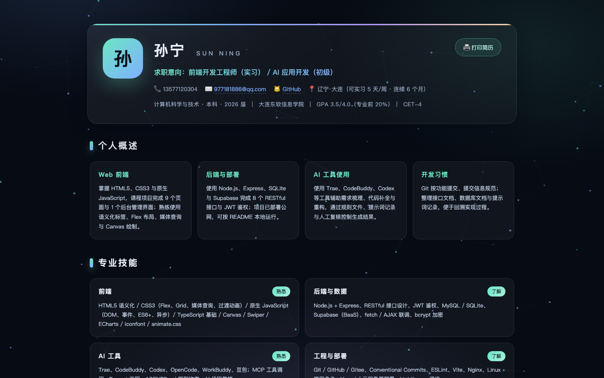

SUN NING · PORTAL
云栖民宿 · 项目导航
仅收录可直接访问的纯前端页面与 Supabase 云端页面；本地后台接口页面以「截图 + 说明」文档展示
纯前端 · 零依赖Supabase 云端数据Canvas 背景动画响应式布局
⭐ 重点推荐 · RESUME
孙宁 · 个人简历
前端开发工程师（实习） / AI 应用开发（初级） · 2026 届
依据《个人简历-孙宁-市场版.docx》设计：8 大板块完整呈现教育背景、专业技能、AI 工具使用、3 个项目经历与荣誉；Canvas 粒子背景、技能进度条、滚动进场、一键打印导出 PDF。
查看完整简历 →
纯前端页面
不依赖任何服务端接口，直接打开即可完整使用
Supabase 云端页面
前端 fetch 直连 Supabase PostgREST，无需本地后端，线上可直接访问
后台接口页面 · 说明文档
这些页面需要本地 Node 后端与 MySQL；每个页面单独建了说明页，含真实截图与功能/接口说明


访问说明：本页列出的「纯前端 / Supabase」页面在静态托管（GitHub Pages）上即可正常使用；
后台接口页面需要启动本地服务 cd backend && node app.js（端口 8016）并连接 MySQL，
因此新版首页不直接放它们的链接，只提供带截图的说明页。说明页均为纯静态 HTML，线上可直接查看。